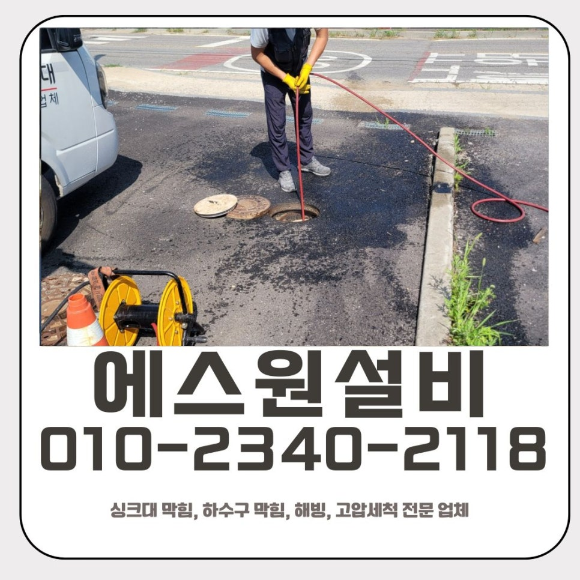
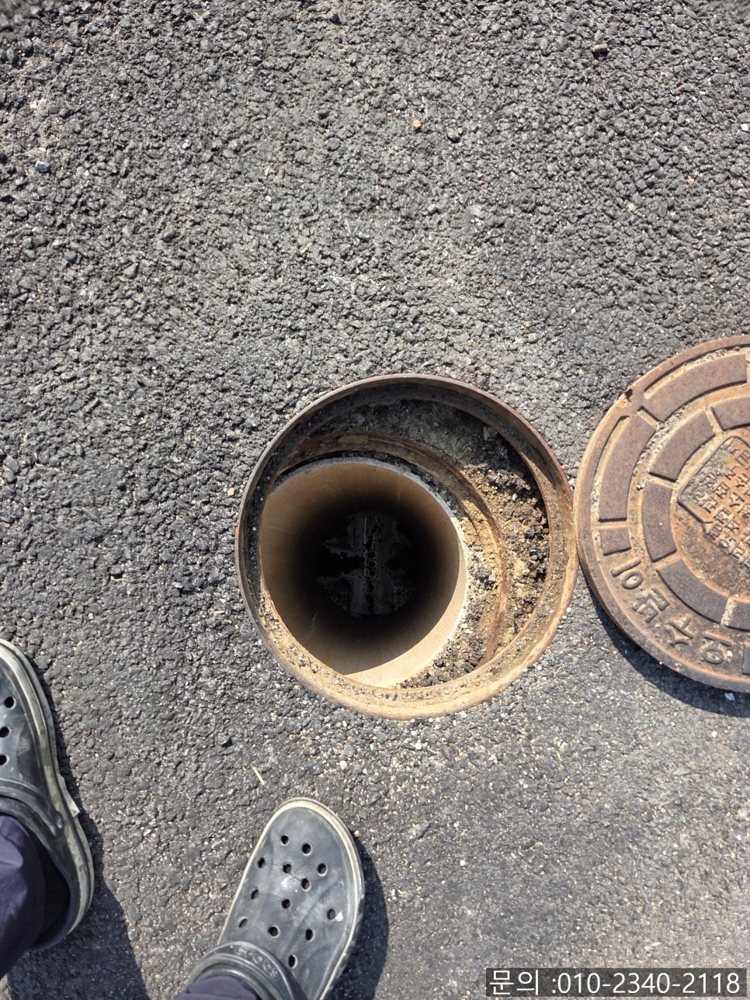
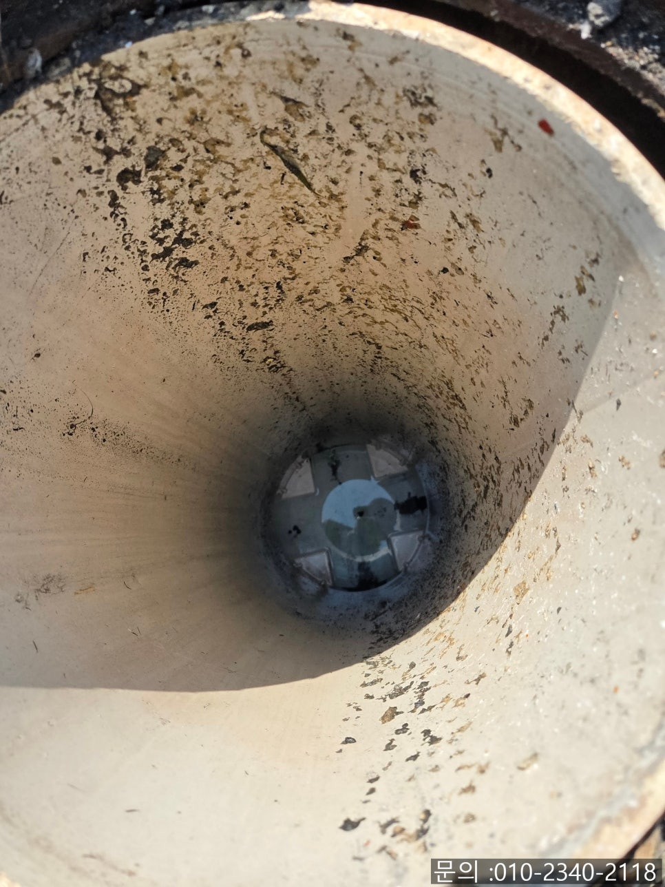
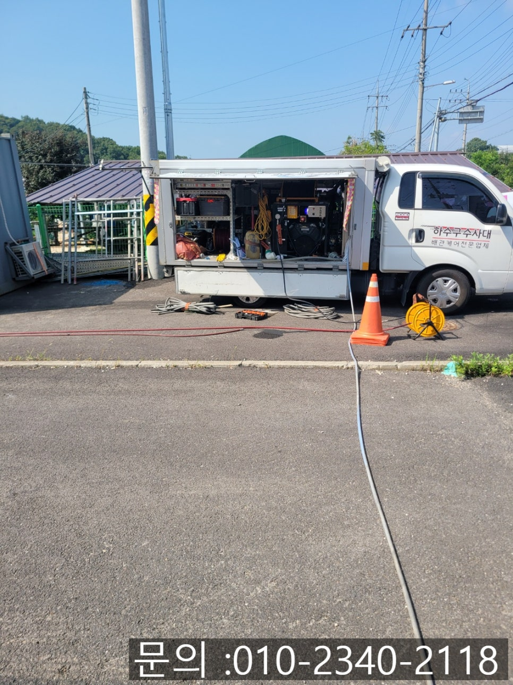
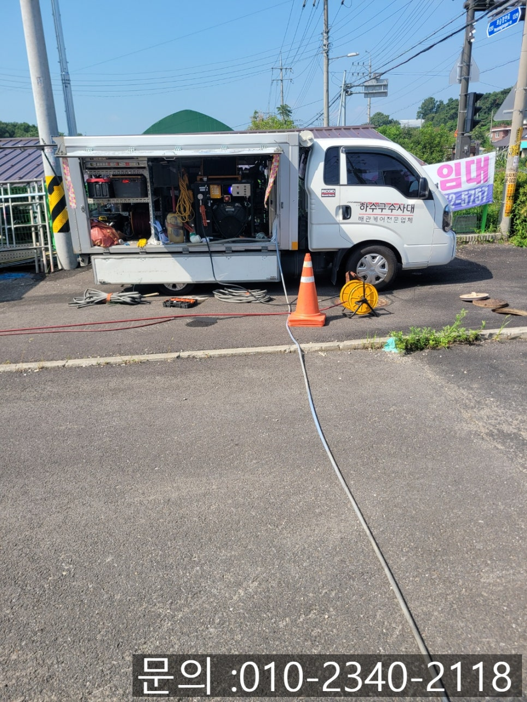
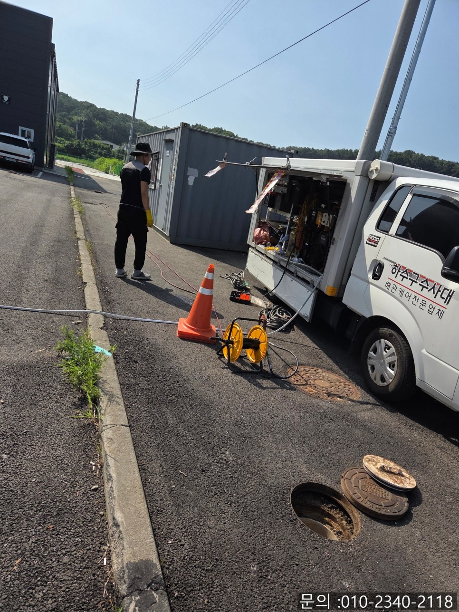
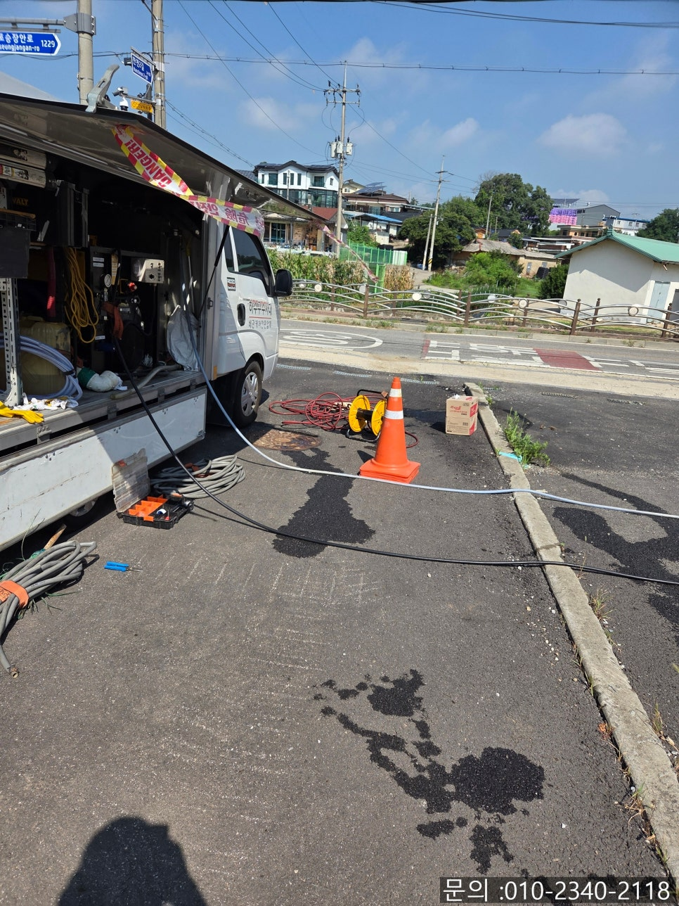

🏠 풍덕천동 하수구 막힘 용인 신봉동 오수 배관 악취 해결 고압세척 업체
용인 신봉동 변기막힘 전문 시공 후기

📋 작업 개요
- 위치: 용인 신봉동, 신봉동, 용인
- 서비스 유형: 변기막힘, 하수구막힘, 배관막힘, 맨홀막힘, 배관청소, 고압세척
- 작업 일시: 2025. 8. 8. 10:30
- 업체명: 하수구수사대 (010-5615-2118)
🔍 문제 상황
안녕하세요.
용인 신봉동 오수 배관 악취 해결 고압세척 업체 에스원 설비입니다.
혹시 변기에서 올라오는 악취 때문에 불쾌함을 느껴본 적 있으신가요? 물이 막히지도 않았고, 눈에 띄는 이상도 없는 것 같은데 계속해서 화장실에서 냄새가 올라온다면 짜증과 스트레스가 크게 느껴질 텐데요. 특히 요즘 같은 여름철은 더욱 심한 불쾌감을 느끼게 되죠.

🔎 원인 분석
💡 전문가 진단: 정밀 진단 장비를 사용하여 슬러지의 고착 여부를 판명하고 타격/세척 작업을 실시했습니다.
또한 사무실이나 음식점, 학원 등 많은 사람들이 사용하는 공용 공간에서는 냄새로 인한 불편이 곧 위생 문제로 이어지고, 더 나아가 방문객이나 고객에게 좋지 않은 인상을 줄 수 있기 때문에 주의가 필요해요.
단독으로 사용 중인 건물에서 변기를 사용할 때마다 올라오는 심한 악취 때문에 직원분들이 큰 불편을 겪고 계셨고, "눈에 띄는 막힘은 없지만 점검을 부탁한다"라며 에스원 설비로 연락을 주셨죠. 직원분들과 방문객들이 매일 이용하는 화장실에서 계속 냄새가 올라오는 문제는 모르는 척할 수 없죠. 지속적인 악취는 위생문제는 물론이고 회사 이미지나 업무 환경에도 부정적인 영향을 줄 수 있기 때문에 빠른 점검 요청은 현명한 선택이었어요.
곧바로 고객님과 약속을 잡고 풍덕천동 하수구 막힘 현장으로 방문 드리게 되었어요. 변기 물은 수월하게 잘 내려갔기에 바로 외부의 오수 맨홀을 열어 확인해 보니, 역시나 오물과 이물질이 맨홀 내부에 가득 쌓여 있었어요.
겉으로는 변기 물이 잘 내려가는 것처럼 보여도, 오수관 내부의 오물들이 악취의 주된 원인이 되는 경우가 많이 있습니다. 특히 음식물 찌꺼기나 생활 오수가 함께 만나는 구간이라면 더더욱 냄새가 심해질 수 있어요.

🔧 작업 과정
고객님과 이 상황을 상세하게 상의한 뒤, 고압세척 작업을 진행하게 되었어요. 용인 신봉동 오수 배관 악취 해결 고압세척 업체 에스원 설비가 직접 보유한 전문 장비인 고압세척기로, 휘발유 엔진으로 작동되는 고압 펌프를 통해 강력한 수압을 만들어 냅니다.
이 수압은 단순히 물을 뿌리는 수준이 아닌 배관 내부 벽면에 쌓여 있는 오물, 찌꺼기, 슬러지까지 강하게 밀어내는 힘을 가지고 있어 배관 청소와 동시와 악취를 제거하고, 배수를 개선하면서 위생상태까지 좋게 만들어 줍니다.
용인 신봉동 오수 배관 악취 해결 고압세척 업체
배관 내시경으로 내부의 오염도를 실시간으로 체크하면서 작업을 진행하였고, 이물질들이 밀려나오면서 배수가 원활하게 이루어지는 것을 확인하였어요. 작업 후에는 내부의 깔끔하게 세척된 모습을 고객님께 직접 보여드리면서 확인시켜드렸습니다.
모든 작업이 끝나고 고압세척을 진행하면서 어질러진 주변도 정리하였습니다. 악취는 확연히 줄어들었고, 배수도 훨씬 깔끔하게 잘 흘러가는 상태로 개선되었어요.


✅ 작업 완료
에스원 설비는 막힘 문제만 해결하는 것이 아니라, 냄새나 악취, 위생 관리, 전반적인 배관의 상태를 검점하고 꼼꼼하게 살피는 설비 전문 업체입니다. 눈에 보이지 않아도 냄새나 작은 이상 문제가 반복된다면 이미 내부는 심각하게 오염되었을 가능성이 매우 높습니다. 믿을 수 있는 배관. 풍덕천동 하수구 막힘 해결 전문가 에스원 설비가 도와드리겠습니다. 지금 바로 문의해 보세요!
경기도 용인시 수지구 풍덕천로129번길 9 5층 590호




⚠️ 하수구 배관 막힘 예방 및 관리 가이드
- ✅ 머리카락, 비닐, 물티슈 등 물에 분해되지 않는 이물질은 하수구 유입을 절대 금지해 주세요.
- ✅ 하수구 거름망을 씌우고 모여진 이물질은 주기적으로 쓰레기통에 바로 비워주셔야 합니다.
- ✅ 배관 노후가 심할 경우 이물질이 더 쉽게 걸리므로 주기적인 배관 세척(고압세척 등)을 권장합니다.
- ✅ 작업 후 1년 이내 재발 시 하수구수사대에서 무상 A/S 보증 서비스를 제공합니다.
💡 핵심 정리
- 확실한 장비 작업(내시경 점검 및 샤프트 스케일링)으로 원인을 뿌리 뽑습니다.
- 작업 후 1년 이내에 동일한 부위 재발 시 100% 무상 A/S 서비스를 보장합니다.
- 서울 · 경기 · 인천 전 지역에 24시간 언제든 긴급 출동할 수 있도록 항시 대기 중입니다.
❓ 자주 묻는 질문 (FAQ)
🚨 용인 신봉동 변기막힘 문제로 고민이신가요?
정확한 원인 진단과 확실한 시공으로 재발 없는 해결을 약속드립니다.
24시간 긴급 출동 | 서울 · 경기 · 인천 전지역 | 1년 내 재발 시 무상 A/S